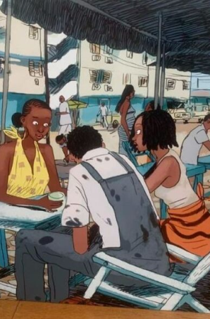
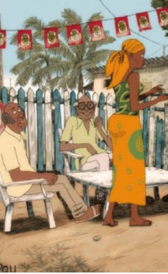

Aya de Yopougon
Aya de Yopougon é uma obra que narra a juventude e o início da vida adulta de três meninas – Aya, que dá nome ao livro, Adjoua e Bintou – que vivem em Yopougon, bairro popular da cidade de Abidjan, na Costa do Marfim. A primeira parte do livro se inicia no ano de 1978 e as demais avançam, respectivamente, para 1979 e 1980. As amigas têm 19 anos no início da narrativa e a história se constrói conforme as decisões da vida adulta passam a ser tomadas e as consequências dessas decisões tornam-se parte da vida de todas.
Ainda que centralizada nas três amigas, e as redes familiares e amorosas que as enlaçam, a narrativa mergulha na cultura da Yopougon: música, culinária, eventos, gírias. Esse percurso se dá numa África pelo olhar africano, longe dos olhares insistentemente estereotipados que são construídos sobre o continente.
Confira algumas fotos da história:

